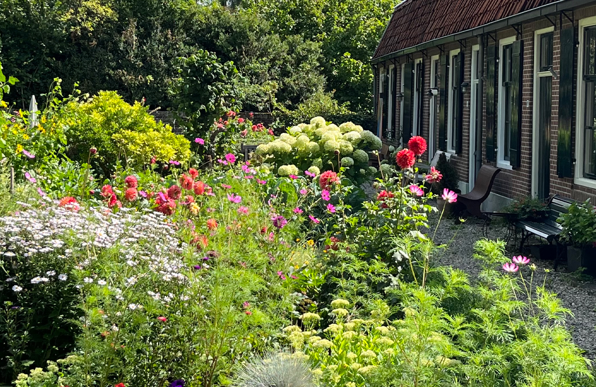
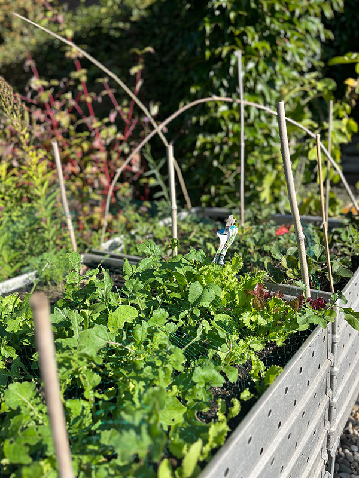
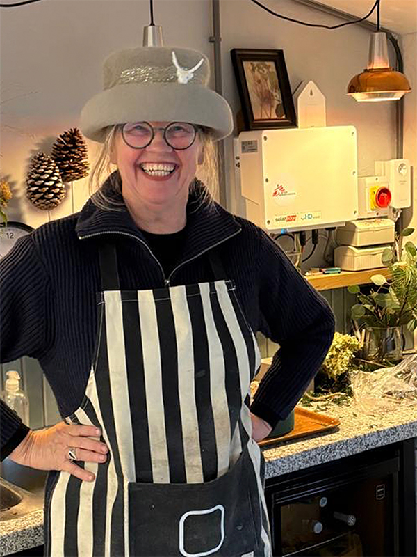
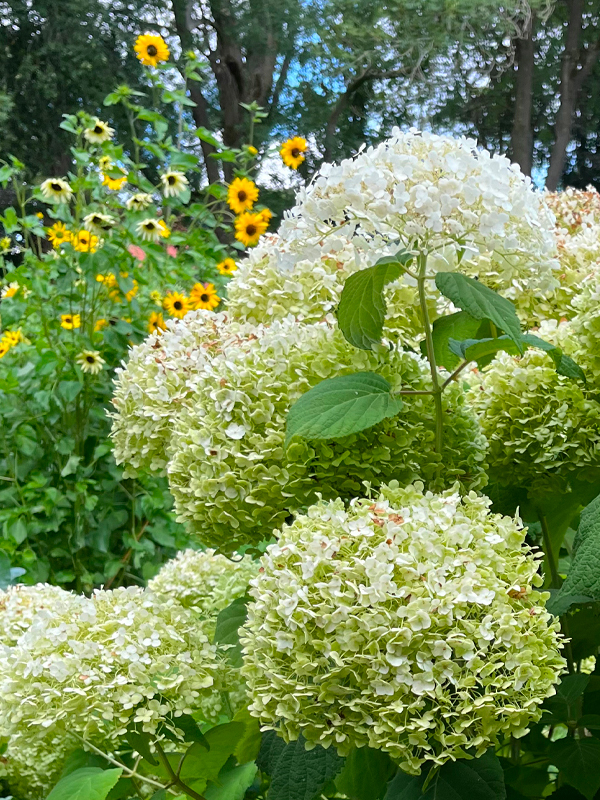
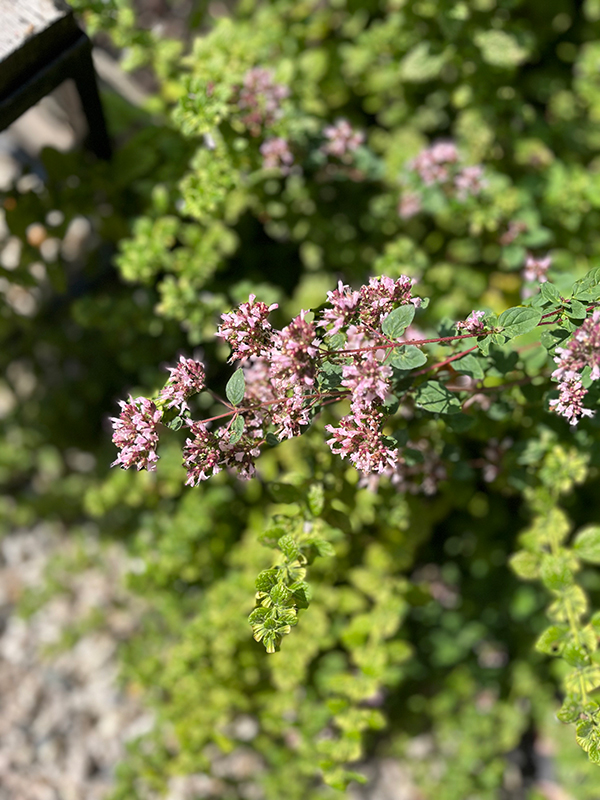
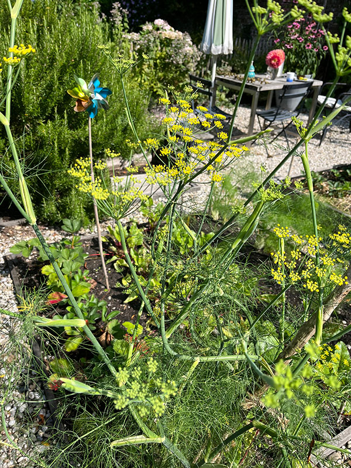
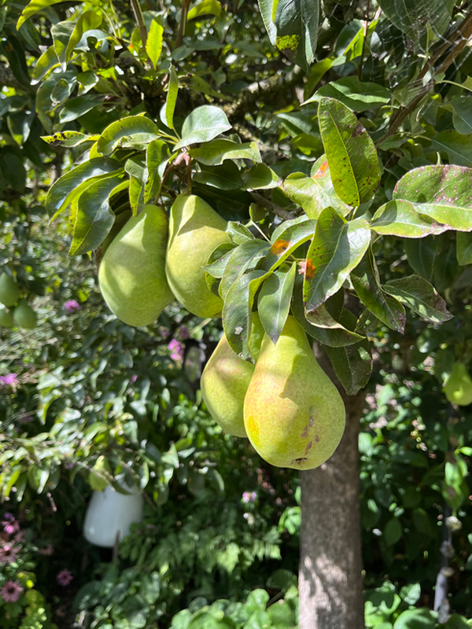

HET BRINKKARRETJE
Vers uit de moestuin zo op de kar. Iedere voorbijganger kan wat meenemen; kruiden, planten, fruit, bloemen, groente en soms een krans met als doel de opbrengst voor Artsen zonder Grenzen. Planten delen maakt de wereld groener en mooier en verse groente maakt je gezond. Via Instagram kan je alle activiteiten van Brinkgeluk volgen en alle filmpjes bekijken.
In september ben ik gestart met het initiatief omdat er teveel peren waren en ik de mogelijkheid zag om ze te verkopen voor het goede doel. De buurt omarmde het initiatief meteen en de volgende dag was de kar gevuld met walnoten, groente, bloemen en kweepeergelei van de Brinkbewoners.
De Brinkgeluk kerstmarkt was de kers op de taart. Er is in totaal 1300 euro aan donaties gedaan. De inzet van de Brinkbewoners, het meehelpen en het enthousiasme is echt geweldig. We blijven in actie met elkaar en voor elkaar! Brinkgeluk dat ben jij.






